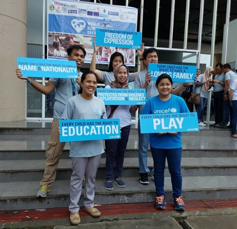

In conflict areas, non-state armed groups often use mines and munitions during combat, putting the local populace at risk of death and disability. Unlike weapons that are aimed or fired, mines are explosive containers that lie dormant until a person or vehicle triggers their detonating mechanism. UXOs are munitions that did not explode when they were employed, and pose a risk of detonation. Abandoned ordances such as artillery shells or hand grenades, are stocks of explosives left behind on the battlefield. In Mindanao, mines and munitions are strewn across roads, villages and waterways, putting at risk the lives and limbs of people, in particular children. The long-term damage to people, livestock and farmland greatly hinders development in the region. Mine risk education is aimed at reducing the risk of mines, UXOs and abandoned ordnances by raising awareness and promoting behavioral changes through public information campaigns, training and engaging with communities. Old mines from as far back as the Second World War and UXOs from recent conflicts continue to maim or kill people in southern Mindanao.
From 2013 to July 2016, 107 cases involving UXOs and 6 cases involving old mines were recorded by Fondation Suisse de Deminage (FSD), or the Swiss Foundation for Mine Action, an international non-government organization that is undertaking focused mine risk education in the Autonomous Region of Muslim Mindanao (ARMM). Children are the most vulnerable to mine risk. Fifty-four per cent of the victims are under the age of 18. Hand and rifle grenades constitute 66 per cent of the UXO casualties while 51 per cent are caused by M79 grenades.
There is need to educate the public about mine risk. Specifically, the 40mm grenades are the main causes of casualties, according to Tony Fish, Programme Manager and head of FSD in Mindanao. Since 2013, the group has mapped out 116 UXOs that need to be cleared. They have been reaching out to schools, volunteers, government personnel and local partners about UXOs, educating over 110,000 people on mine risks.
Demining is costly and often time consuming. FSD has been working closely with the Demining Section of the Armed Forces of the Philippines to clear the mines and UXOs reported by communities. “Our mine action programme, funded by the European Union’s Instrument for Stability, is in support of the peace process in Mindanao,” says Markus Schindler, Project Officer for mine risk education at FSD. The group plans to extend its campaign to include risk education on small arms and light weapons. In the wrong hands, these weapons undermine the rule of law, contribute to daily tragic casualties, fuel crime and instability.
Demining is costly and often time consuming. In the wrong hands, these weapons undermine the rule of law, contribute to daily tragic casualties, fuel crime and instability.
With the El Niño Southern Oscillation now in neutral conditions, sea surfaces are drifting towards cooler than average temperatures, indicating the possibility of La Niña in the coming months. Though the Philippine Atmospheric Geophysical and Astronomical Services Administration (PAGASA) expected a weak La Niña, the public has been advised to prepare for the risks which the above-normal rainfall and strong monsoon activity will bring.
In preparation for the rainy season and the impact of La Niña in the coming months, the Department of Interior and Local Government, the lead agency for preparedness in the National Disaster Risk Reduction and Management Council (NDRRMC), has issued a directive for all local governments to carry out disaster preparedness measures and develop La Niña action plans. The Local Government Code (RA 7160) and the Philippines Disaster Risk Reduction and Management (DRRM) Act (RA10121) mandate local governments, which are on the front line of response during emergencies, to be proactive in disaster-related activities.
As indicated in the Oplan Listo manual for hydro-meteorological hazards, a manual that assists local government in formulating disaster preparedness plans and allows them to assess their readiness, local chief executives and disaster managers can refer to procedures and checklists on early and minimum critical preparations before, during, and after disasters. There are checklists for mayors on early and critical preparations, as well as a checklist for local government operations officers, chiefs of police and fire marshals.
The early preparations checklist for mayors promotes proactive measures to be able to carry out the functions during the critical period when an official weather advisory is issued by PAGASA. Local government executives must ensure the creation of local DRRM structures and systems to be mobilized; institutionalize policies and plans; build competencies of staff; and purchase and prepare needed hardware and supplies. In the event of a typhoon emergency, the critical preparations checklist states that local chief executives must convene local DRRM councils, activate operations centres, preposition relief stockpiles, and pre-emptively evacuate residents in high-risk areas. Local governments are also encouraged to closely coordinate with PAGASA for timely weather updates and with the Mines and Geosciences Bureau for adequate information on the threat of flooding and rainfall-induced landslides within their respective jurisdictions. In line with government’s ‘zero casualty policy’ during calamities, Oplan Listo complements the Pre-Disaster Risk Assessment, a NDRRMC-initiated process that mitigates hydro-meteorological hazards wherein government responses are based on the analysis of identified risks. The emergencies in the past year also saw the devolving of leadership and response functions to regional and local authorities, with NDRRMC providing more accurate and timely information on the hazards through early warning systems.
The Philippine Humanitarian Country Team (HCT) is working with the Inter-Agency Standing Committee clusters to develop contingency plans to better position itself to quickly support Government emergency response efforts. It is regularly invited to the Government’s pre-disaster risk assessment as an observer, resulting in a greater understanding of the government’s planning scenario and preparedness actions.
The Philippine Humanitarian Country Team is working with the Inter-Agency Standing Committee clusters to develop contingency plans to better position itself to quickly support Government emergency response efforts.
Southeast Asia is exposed to all types of hazards, making it one of the most disasteraffected regions in the world. The past decade saw an increase in the frequency and severity of disasters, with the region facing cyclical risks such as typhoons, floods, landslides, droughts, earthquakes and volcanic eruptions.
The Association of Southeast Asian Nations (ASEAN) was established in 1965 as a means to enhance political cooperation, promote economic competitiveness, and strengthen peace and security of each Member State. ASEAN has further imprinted its mark by adopting a humanitarian mandate, embodied in the ASEAN Agreement on Disaster Management and Emergency Response (AADMER) which provides a framework for “regional cooperation, coordination, technical assistance and resource mobilization in all aspects of disaster risk reduction and disaster management.”
The AADMER, which was ratified by the 10 Member States in 2005, was the first legally binding agreement on disaster response. It mandated the establishment of the ASEAN Coordinating Centre for Humanitarian Assistance on disaster management (AHA Centre) in 2011, which is tasked with facilitating cooperation and coordination among Member States and with the United Nations and international organizations for disaster management and emergency response. Detailed work programmes for 2010-2015 and 2016-2020 were developed to implement the AADMER. The AHA Centre is working closely with national disaster management offices and building partnerships with the UN, international organizations and other ASEAN partners and stakeholders.
The UN encourages countries in the region to strengthen cooperation in disaster preparedness and response, and it has committed to support ASEAN particularly in the areas of technical exchange and capacity-development. According to Oliver Lacey-Hall, who heads OCHA Indonesia and has worked closely with ASEAN, “there is growing capacity and political will among governments in the Asia-Pacific to lead in disaster management as well as to increase involvement of ASEAN in humanitarian response.”
OCHA, in coordination with the AHA Centre, supports in the implementation of several of the priority programmes which include the following:
Civil-military coordination – OCHA provides direct support to the establishment of ASEAN’s humanitarian civil-military coordination policy, framework and mechanisms. OCHA also assisted in the development of the Asia-Pacific Conferences on Military Assistance to Disaster Relief Operations Guidelines, which build on the Oslo Guidelines on the Use of Military and Civil Defence Assets in Natural Disaster Settings, while contextualizing agreed principles and approaches to the Asian operating environment.
OCHA’s country office in the Philippines continues to assist the Office of Civil Defense (OCD) in providing Civil-Military Coordination training for the Armed Forces of the Philippines and other agencies of the National Disaster Risk Reduction and Management Council. The country office also provides secretariat support in the government’s engagement at the regional level, particularly to the Philippines as chair of the Regional Consultative Group (RCG). The RCG is a regional forum that brings together the humanitarian, civilian and military actors involved in disaster response preparedness planning and disaster response in the region.
Mobilization of regional response – OCHA supports ASEAN and the AHA Centre in coordinating teams of responders deployed into disaster emergencies, including those coming from within and external to the ASEAN region. The AHA Centre and OCHA are working to ensure interoperability between ASEAN and international tools and services for response, such as the UN’s On-Site Operations Coordination Center and the Joint Operations Coordination Centre of ASEAN.
In response to the 2015 typhoon emergencies in the Philippines, OCHA and AHA Centre were in constant coordination and regularly shared information during risk assessment meetings, and were deployed as part of the government’s rapid needs assessment.
Capacity of the ASEAN Emergency Response and Assessment Team (ASEANERAT) – ASEAN-ERAT is a surge capacity mechanism that assists Member States’ national disaster management offices with rapid needs assessment, on-site coordination and facilitating incoming assistance from other ASEAN Member States.
OCHA Philippines supported this year’s ASEAN-ERAT induction course held in the Philippines by providing a briefing on the International Humanitarian System, Disaster Response Tools and Services, and the UNDAC System, as well as participating in a simulation exercise.
Professionalism in disaster management through standardization and certification - OCHA participates in the annual delivery of the AHA Centre Executive (ACE) Programme, a six-month course which provides on-the-job training and capacity building for professionals from the national disaster management offices of Member States.
OCHA Philippines staff supported OCHA’s Regional Office for Asia and the Pacific in the conduct of several of the courses for this year’s students. The country office also welcomed the ACE Programme participants during their field visit in the country.
Establish ASEAN youth leadership in DRR and CCA – OCHA Philippines supported this year’s ASEAN Youth Volunteer Programme, a month-long engagement aimed at developing 50 ASEAN youth DRR-leaders who will take the lead in empowering local communities through Disaster Risk Reduction (DRR).
The UN recognizes the increasing self-reliance, capacities and leadership of ASEAN and its Member States to lead disaster management. As part of its commitment, OCHA Philippines will continue to enhance its work in supporting the further development of national capacity for disaster management.
“There is a growing capacity and political will among governments in the Asia-Pacific to lead in disaster management as well as to increase involvement of ASEAN in humanitarian response”. - Oliver Lacey-Hall, OCHA Indonesia Head of Office
On World Humanitarian Day, 19 August, we remembered those who do whatever is needed to make sure aid reaches the most vulnerable populations. We gave thanks to all humanitarian workers who go out in the field to lend a helping hand. Field workers serve far-flung barangays and are often the first to arrive in the aftermath of a disaster. They give lifesaving assistance during typhoons, build emergency shelters, and assist those displaced by conflict. Aid workers are also the last to leave after a disaster, delivering livelihood, education and health assistance to help rebuild the community.
World Humanitarian Day has gone from its inception in 2008 as a day to recognize humanitarian personnel and those who have lost their lives working for humanitarian causes to a global campaign celebrating the spirit of humanitarianism, and mobilizing people to advocate for a more humane world.
Manila and Iloilo City
In Manila, OCHA, together with 17 participating organizations (ACF, ACTED, ADRA, CARE, FAO, Handicap International, IFRC, IOM, Médecins du Monde, Oxfam, Save the Children, UNDP, UNFPA, UNHCR, UNICEF, WFP, and World Vision) ran a photo exhibit featuring humanitarians in action. The exhibit also featured the launch of a new virtual reality film produced by OCHA entitled ‘Home’. The film follows the journey of Secretary-General Ban Kimoon during his Mission for Humanity, where he visited people in crises around the world.
In Iloilo, CARE held a learning conference on 19 August for the community associations in the western Visayas region. More than two years after Typhoon Haiyan, it still assists affected Iloilo communities in livelihood recovery and sustainability assistance. The conference, entitled ‘Building Resilient Community Enterprises and Empowering Women Entrepreneurs’ shared knowledge and good business practices with CARE-assisted community organizations and women entrepreneurs.
Mindanao
In Mindanao, World Humanitarian Day kicked off with a motorcade with the Autonomous Region of Muslim Mindanao-Humanitarian Emergency Action and Response Team (ARMMHEART) community, the Rotary Club of Cotabato City, and the Mindanao Humanitarian Team (MHT). Thirtyfive vehicles led the way through the city plaza to the Office of the Regional Governor. Inside the ARMM grounds, a photo exhibit at the Shariff Kabunsuan Complex titled ‘One Humanity: Faces of Resilience’ was formally opened by ARMM Executive Secretary Attorney. Laisa Alamia. A short programme followed, with organizations giving a short presentation on their activities in Mindanao. The photo exhibit, organized by OCHA, included photos from members of the MHT and ran until 26 August.

Aid workers are often the last to leave after a disaster, delivering livelihood, education and health assistance to help rebuild the community.
A joint team of ARMM government agencies and the Mindanao Humanitarian Team carried out assessments in Maguindanao to determine the needs of evacuees in camps and those who returned to their homes.
An armed conflict between Government troops and the Bangsamoro Islamist Freedom Fighters in Maguindanao that started on 13 July 2016 has ceased, following an intervention by the Moro Islamic Liberation Front leadership, the Joint Coordination Committee for Cessation of Hostilities and the International Monitoring Team. The conflict affected five municipalities in Maguindanao, displacing over 30,000 people. Twenty schools were forced to close during the hostilities, with some used as evacuation centres. This group of municipalities represents one of the most conflict-affected areas in Mindanao. The local governments together with ARMMHEART responded to the immediate food and medical needs of the displaced people. As of the first week of August, 80 per cent of the displaced people had returned to their homes. However, some were unable to return for fear of another conflict. A joint team of ARMM government agencies and the MHT carried out assessments in Maguindanao to determine the needs of evacuees in camps and those who returned to their homes.